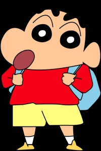
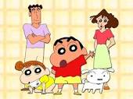

Biography

Shinchan is a fictional character from the Japanese manga and anime series "Crayon Shin-chan." He is known
for his mischievous and playful nature, often getting into humorous and awkward situations.There were rumors
that Shin Chan was actually a real kid who dies when he was 5 years old and the show was made in his memory.
But actually, the creator of Shin chan said that the character is based on his own childhood. So in short,
yes the creator of Shin chan is actually Shin chan himself.
// google refrence
Family

Misae Nohara (Wife) Shinosuke Nohara (Son) Himawari Nohara (Daughter) Semashi Nohara (Brother) Ginnosuke Nohara (Father)
Tsuru Nohara (Mother) Yoshiji Koyama (Father-in-law) Hisae Koyama(Mother-in-law)
Hobbies
playing video games with his pals, attempting to imitate his favorite action hero, or flirting with
a stunning woman.
Favorite Quotes
“Ab mai itna bhi kuch khaas nhi”
“Mera naam hai Shinchan Nohara aur mai 5 saal ka hu, mujhe shimlamirch pasand nhi.”
TV Series
An anime adaptation of Crayon Shin-chan, produced by Shin-Ei Animation, has aired in Japan on TV Asahi
since April 13, 1992. The series was originally directed by Mitsuru Hongo from 1992 to 1996, and was replaced by Keiichi Hara from 1996 to 2004. Since 2004, the series has been directed by Yuji Muto. The music in the series is composed by Toshiyuki Arakawa. The series was originally going to end in 1994 and have its time-slot replaced by a remake of Umeboshi Denka. However, because the series was a huge hit on TV Asahi, the network decided not to replace it.[16]
An English subtitled version of Crayon Shin-chan ran on KIKU in Hawaii from December 18, 1993, until December 2001[17] when Vitello Productions acquired the rights. The episodes were translated by Karlton Tomomitsu.[18]
Merchandise
Shinchan's character has been used in various merchandise, including toys, clothing, and accessories.
Character Traits
Comedy
Gallery
Shinchan is known for his childish and often inappropriate behavior, which leads to comical situations.
"Crayon Shin-chan" is famous for its humor and comedy elements, which appeal to both children and adults.